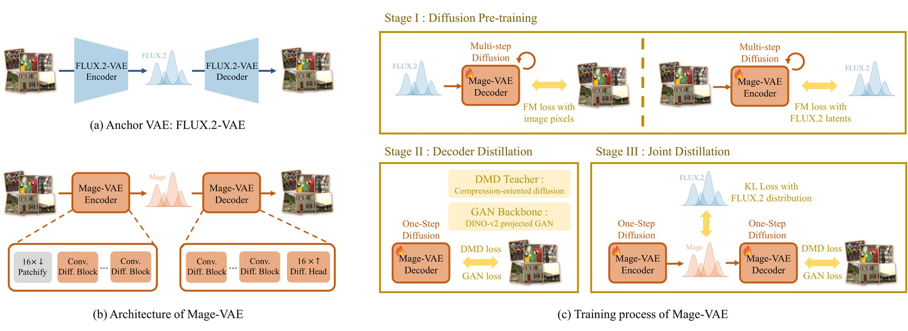
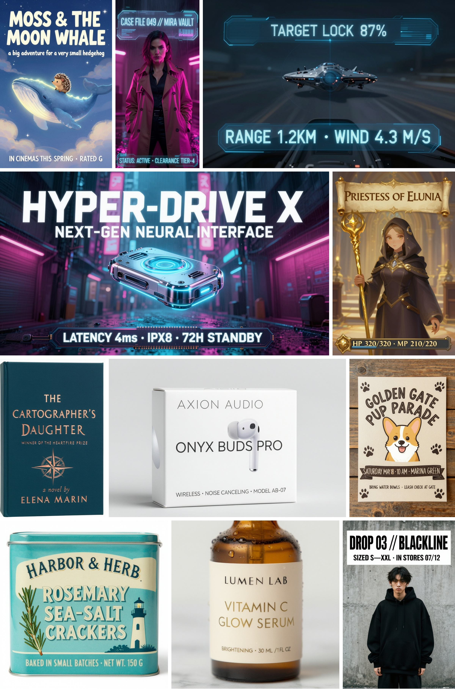
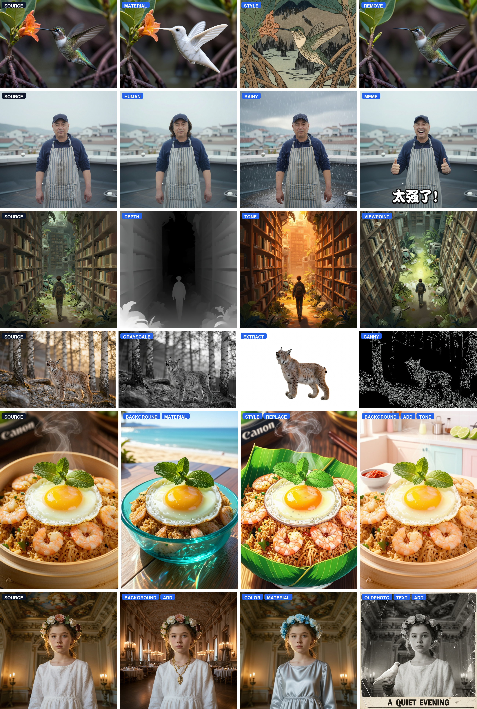

Text-to-image generation
4 steps0.88
GenEval · Mage-Flow-Turbo
0.873
CVTG-2K · Mage-Flow-Turbo
| Model | Params | GenEval | CVTG-2K |
|---|---|---|---|
| Mage-Flow-Turbo | 4B | 0.88 | 0.873 |
| Z-Image-Turbo | 6B | 0.82 | 0.859 |
| Qwen-Image | 20B | 0.87 | 0.829 |
| FLUX.2-Klein-9B | 9B | 0.86 | 0.424 |
Latency measured at 1024² on a single NVIDIA A100. Benchmark results follow the unified protocol in the technical report.
Large-scale visual generators are increasingly capable but costly to train, fine-tune, and deploy. We introduce Mage-Flow, a compact 4B-scale generative stack for efficient text-to-image generation and instruction-based image editing. The stack is built from two co-designed components: Mage-VAE, a lightweight high-fidelity latent tokenizer, and a Native-Resolution Multimodal Diffusion Transformer trained with rectified flow matching. Mage-VAE uses one-step diffusion-style encoding and decoding with anchor-latent regularization, preserving the reconstruction quality of strong public VAEs while reducing tokenization cost by more than an order of magnitude. Together with native-resolution packing and stack-level CUDA kernel fusion, the stack supports flexible-resolution training and improves end-to-end training throughput by about 2.5×. Built on this foundation, we develop a complete model family with Base, RL-aligned, and Turbo variants for both generation and editing. Diffusion-NFT improves prompt following, text rendering, aesthetic quality, and editing fidelity, while few-step distillation with adversarial perceptual guidance produces 4-step Turbo models for low-latency inference. Despite its compact scale, Mage-Flow and Mage-Flow-Edit achieve competitive performance across standard generation and editing benchmarks. More importantly, the Turbo variants make high-resolution generation and editing practical for interactive use: at 1024² resolution on a single NVIDIA A100 GPU, Mage-Flow-Turbo generates an image in 0.59 s, and Mage-Flow-Edit-Turbo edits an image in 1.02 s, while maintaining a small memory footprint. These results show that careful tokenizer–backbone–system co-design can deliver strong high-resolution generation and editing within an efficient 4B model family.
The same compact stack powers generation and editing, each available as Base, aligned, and 4-step Turbo variants. Stack-level optimization and quality-preserving distillation make high-resolution inference interactive.
Quality vs. latency & memory at 1024² on a single A100 — GenEval (generation, left) and GEdit-EN (editing, right). Mage-Flow sits at the fast, low-memory frontier.
One-step encoding and decoding remove the high-resolution tokenizer bottleneck while preserving a generation-ready latent space. Mage-VAE matches strong reconstruction quality with ~12× / ~22× fewer encode / decode MACs per pixel.

One-step diffusion encode/decode with anchor-latent regularization.
Variable-length image and text packing avoids rigid resolution buckets and unnecessary padding. One shared 4B backbone supports flexible canvases from 512 to 2048 pixels, including extreme aspect ratios, while packed CFG evaluates both branches in one forward pass.

Packed native-resolution image and text tokens through the shared NR-MMDiT.
| Model | Params | GenEval | CVTG-2K |
|---|---|---|---|
| Mage-Flow-Turbo | 4B | 0.88 | 0.873 |
| Z-Image-Turbo | 6B | 0.82 | 0.859 |
| Qwen-Image | 20B | 0.87 | 0.829 |
| FLUX.2-Klein-9B | 9B | 0.86 | 0.424 |
| Model | Params | GEdit-EN | GEdit-CN |
|---|---|---|---|
| Mage-Flow-Edit-Turbo | 4B | 8.271 | 8.264 |
| FireRed-Image-Edit-1.0 | 20B | 7.943 | 7.887 |
| JoyAI-Image-Edit | 16B | 8.276 | 8.125 |
| Qwen-Image-Edit-2511 | 20B | 7.877 | 7.819 |
20 models · 13 columns. GenEval, CVTG-2K, OneIG, and LongText use 0–1 scales; DPG and TIIF use 0–100 scales.
20 models · 9 columns. ImgEdit uses a 0–5 scale, GEdit a 0–10 scale, and TextEdit a 0–25 scale.



Editing diversity — select an edit type to compare the shared source image with the corresponding Mage-Flow-Edit result.
@article{zhang2026mageflow,
title={Mage-Flow: An Efficient Native-Resolution Foundation Model for Image Generation and Editing},
author={Zhang, Xinjie and Zhang, Peng and Zheng, Shicheng and Guo, Jinghao and Jia, Zhaoyang and Shen, Yifei and Guo, Xun and Luo, Yuxuan and Li, Jiahao and Xie, Wenxuan and Pu, Fanyi and Zhang, Xiaoyi and Zhang, Kaichen and Guo, Zongyu and Bi, Tianci and Gui, Dongnan and Liu, Zhening and Wen, Zimo and Zheng, Zihan and Yang, Senqiao and Li, Xiao and Wang, Jinglu and Li, Bin and Lu, Yan},
journal={arXiv preprint arXiv:2607.19064},
year={2026}
}


{kind=link}
{kind=link}
{kind=link}
{kind=link}